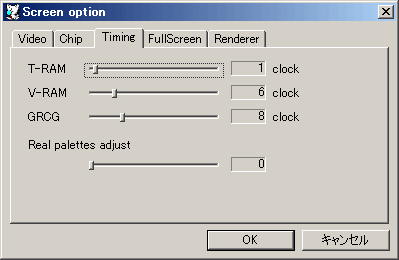

テキストRAMへのアクセス時のウェイトクロックを指定します。
グラフィックRAMへのアクセス時のウェイトクロックを指定します。
条件にも依りますが、実機のグラフィックRAMへのアクセスはかなりの時間が掛かります。スクロールが速すぎる場合、大きめの値に設定して下さい。
GRCG動作中のグラフィックRAMへのアクセス時のウェイトクロックを指定します。
Real Palettes動作中のパレット変更タイミングを調節します。 数値はライン数で指定します。